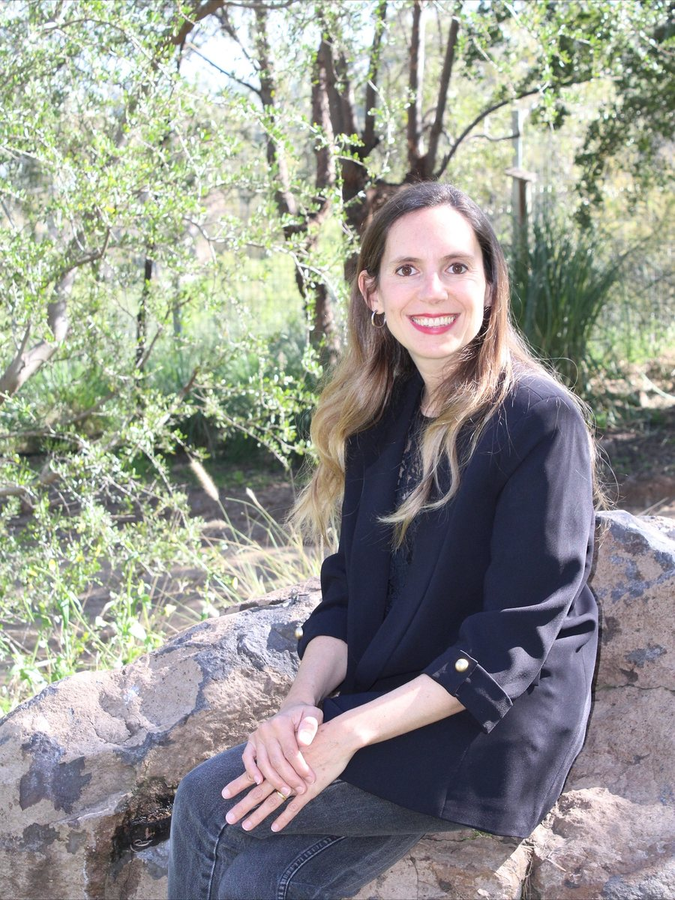
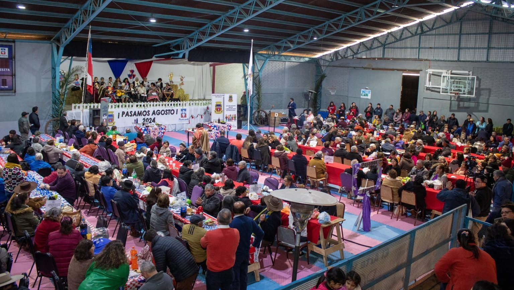
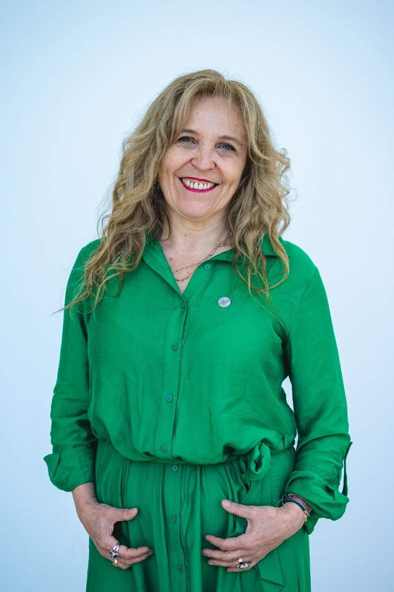

Cuando tener hijos deja de ser prioridad:el nuevo escenario demográfico chileno
Chile tiene hoy la tercera tasa de fecundidad más baja del mundo. Este reportaje recorre lo que eso significa en las maternidades, en las decisiones de las parejas y en un país que envejece más rápido de lo que se prepara.
Por Camilo García Godoy, Matías Johnston Castro y Lisette Pérez González Proyecto de Título II, Periodismo, Universidad Autónoma de Chile, 2026
La pirámide de población de Chile entre 1992 y 2070: la base se estrecha y la cima se ensancha. Fuente: INE, estimaciones y proyecciones base Censo 2024.
Chile registra una tasa de fecundidad de apenas 0,99 hijos por mujer, muy por debajo de los 2,1 necesarios para el reemplazo generacional. Crédito: Hospital Clínico de la Universidad de Chile.
Chile atraviesa una crisis demográfica sin precedentes que lo sitúa como el tercer país con la peor tasa de fecundidad del mundo, ubicándose únicamente por detrás de Corea del Sur y Singapur. Con un promedio de apenas 0,99 hijos por mujer, muy por debajo del umbral de reemplazo generacional de 2,1, este escenario refleja una transformación cultural radical en la que la maternidad ha dejado de ser un mandato social por defecto para convertirse en una decisión que compite directamente con otros planes de vida.
Chile hoy0,99
Reemplazo generacional2,1
Hijos promedio por mujer
Según el reportaje de investigación de Radio Bío-Bío titulado “Prefiero un gatito: la dramática cifra que tiene a Chile sin hijos y con tercera peor tasa del mundo”, el fenómeno responde a un síntoma cultural clave que tiene que ver con la consolidación de nuevos estilos de vida donde la crianza de hijos cede espacio a otras prioridades, como por ejemplo, el cuidado de mascotas.
Este cambio dialoga directamente con la perspectiva de Ignacio Cáceres, doctor en sociología y docente de la Pontificia Universidad Católica de Chile (PUC), quien detalló que la decisión de tener un hijo empieza a discutir con otras prioridades y deja de ser solo un asunto de costo económico, sino que también el costo de oportunidades.
Dos realidades clínicas: clínicas vacías y hospitales complejos
La baja natalidad no golpea igual a la medicina privada que a la red pública.
Esta problemática no se manifiesta de la misma forma a lo largo del sistema de salud en nuestro país. La transición demográfica ha trazado una profunda brecha entre la medicina privada y la red pública; mientras los centros privados reestructuran pabellones y reducen camas por la drástica baja de nacimientos, los hospitales y la Atención Primaria de Salud (APS) absorben un volumen de embarazados de creciente complejidad, fuertemente marcado por la migración y dinámicas sociales distintas.
En las clínicas del sector privado, el fenómeno de la baja natalidad se traduce en una contracción visible de la infraestructura. Magaly Vergara, matrona jefe de la Clínica Indisa de la Región Metropolitana, evidenció este declive estructural.
−40% de nacimientos en diez años en Clínica Indisa, según la estimación de su matrona jefe. Cada cuna representa el 10% de los partos de hace una década.
Por otra parte, en el sistema público, el descenso de la natalidad no ha derivado en recortes de personal ni en cierres de camas, sino en una reconfiguración de la labor clínica hacia la alta complejidad y la atención psicosocial.
Cada año hay menos bebés en Chile
Población de 0 años de edad al 30 de junio. Línea continua: estimación; punteada: proyección.
Fuente: INE, Estimaciones y proyecciones de población 1992-2070, base Censo 2024.
La especialista advirtió sobre los desafíos que enfrenta la obstetricia ante las particularidades de la población migrante. Crédito: Hospital El Pino.
El panorama en los hospitales públicos de la periferia metropolitana, como el CRS El Pino (que atiende a comunas como San Bernardo y El Bosque), la disminución de nacimientos convive con el ingreso de pacientes migrantes más jóvenes y con mayor vulnerabilidad social. La Doctora Jocelyn Stern, jefa del Servicio de Ginecología y Obstetricia de dicho recinto, abordó este giro asistencial.
A pesar de que las estadísticas nacionales del Ministerio de Salud (Minsal) apuntan a un descenso acelerado en la fecundidad adolescente a nivel global en Chile —con caídas de más del 70% en las últimas dos décadas gracias al acceso a métodos anticonceptivos de larga duración (LARC) en la red pública—, en sectores vulnerables el fenómeno se mantiene activo por causas profundas de raíz social.
Lejos de responder únicamente a un fallo en la planificación familiar, en comunas con menores ingresos la gestación temprana persiste como una vía de afirmación personal y autonomía dentro del núcleo familiar. Así lo graficó la Dra. Stern desde la práctica hospitalaria.
Chile registró una caída de más del 70% en la fecundidad adolescente entre fines de los 2000 y 2020. Crédito: Hospital El Pino.
¿Por qué tener hijos se vuelve una decisión más difícil?
La carrera profesional, el reparto desigual de los cuidados y el costo de criar pesan sobre las nuevas generaciones.
La académica sostuvo que la maternidad compite cada vez más con los proyectos profesionales y personales de las mujeres. Crédito: LinkedIn.
Este fenómeno también puede observarse desde la experiencia de las nuevas generaciones. La psicóloga y académica de la Universidad de Chile, Javiera Rosell, planteó que la decisión de formar una familia se cruza cada vez más con otros proyectos personales, particularmente la trayectoria profesional de las mujeres. A ello se suma el costo económico asociado a la vivienda y a la crianza.

La maternidad puede significar un retroceso laboral para las mujeres, advirtió Wiegand. Crédito: LinkedIn.
La tensión aparece cuando ambos proyectos —el familiar y el laboral— deben convivir. María del Pilar Wiegand, doctora en Sociología y académica de la Universidad Adolfo Ibáñez (UAI), explicó que el ingreso de las mujeres al mercado laboral no estuvo acompañado por una incorporación equivalente de los hombres a las tareas domésticas y de cuidado.
De acuerdo con la II Encuesta Nacional sobre Uso del Tiempo del INE, las mujeres destinan en un día tipo 4 horas y 57 minutos al trabajo no remunerado, mientras que los hombres únicamente dedican 2 horas y 52 minutos. La diferencia alcanza las 2 horas y 5 minutos diarios. Entre las personas de 25 a 44 años —grupo especialmente relevante para la crianza—, la brecha llega a 2 horas y 32 minutos.
Las mujeres dedican dos horas más al día al trabajo no remunerado
Tiempo destinado en un día tipo, en horas y minutos.
Fuente: INE, II Encuesta Nacional sobre Uso del Tiempo.
Rosell coincide en que el reparto de las tareas domésticas y de cuidado es un factor relevante al momento de pensar en la maternidad. Desde la psicología, advirtió que combinar el trabajo remunerado con la crianza puede provocar un importante desgaste, especialmente cuando las responsabilidades no se distribuyen de manera equilibrada.
A esa sobrecarga se suma el costo que la maternidad puede tener sobre la trayectoria laboral. Wiegand argumentó que la ausencia temporal asociada al nacimiento de un hijo no necesariamente implica solo una pausa profesional, sino que puede traducirse en un retroceso frente a quienes mantienen su continuidad laboral. Mientras las mujeres deben compatibilizar su regreso al trabajo con nuevas responsabilidades de cuidado, los hombres suelen conservar una mayor continuidad.
¿Cuánto cuesta criar en Chile?
Un hogar con niños, niñas o adolescentes gasta entre un 27% y un 31% más que uno sin hijos. El primer hijo concentra la mayor parte del costo.
Costo mensual promedio
$595.000al mes
$383.267 bienes y servicios
$211.616 tiempo de cuidado
Costo mensual según la edad del hijo o hija
Con los años el cuidado pesa menos y los gastos pesan más
Bienes y servicios
Alimentación, educación, salud, transporte y otros productos y servicios asociados a la crianza.
Tiempo de cuidado
Tiempo no remunerado que madres, padres y cuidadores destinan a la crianza, valorizado en pesos.
Fuente: Ministerio de la Mujer y la Equidad de Género, Primera Canasta de Crianza de Chile, Encuesta de Presupuestos Familiares 2021-2022 y Encuesta Nacional sobre Uso del Tiempo 2023.
En ese contexto, la conciliación no termina necesariamente cuando existe una sala cuna: también importa si los sistemas de cuidado se ajustan a las jornadas y necesidades reales de las familias. Wiegand plantea avanzar hacia una mayor flexibilidad laboral, empleos de media jornada y salas cuna universales para facilitar la crianza. El desafío es que tener hijos no implica que las mujeres deban asumir, además de los cuidados, el costo de frenar o postergar su desarrollo profesional.
El impacto de envejecer de golpe
En 2025, casi la mitad de las comunas de Chile registró más defunciones que nacimientos.
El cambio demográfico que atraviesa Chile ya comienza a expresarse en la realidad de distintas localidades del país. Según cifras provisionales del Instituto Nacional de Estadísticas (INE), durante 2025 el 45,1% de las comunas registró más defunciones que nacimientos, equivalente a 156 comunas. Entre los casos más pronunciados se encuentran Cochamó, en la Región de Los Lagos, con una tasa de crecimiento natural de -8,6 por cada mil habitantes, Portezuelo, en Ñuble, con -7,0, y Río Hurtado, en Coquimbo, con -5,9. El fenómeno refleja el avance del envejecimiento y la baja natalidad en distintos territorios, en especial en localidades rurales.
Las comunas donde la población más se achica
Tasa de crecimiento natural 2025 (nacimientos menos defunciones), por cada mil habitantes.
Fuente: INE, cifras provisionales 2025.

El 45,1% de las comunas registró más defunciones que nacimientos durante 2025. Crédito: Ilustre Municipalidad de Portezuelo.
Explora la pirámide de población, año por año
Mueve el control o presiona reproducir. En amarillo, menores de 15 años; en azul, personas de 65 años o más.
Fuente: INE, Estimaciones y proyecciones de población 1992-2070, base Censo 2024. Desde 2025, los valores son proyecciones.
Las consecuencias de esta transformación van más allá de la composición de los hogares y plantean desafíos para sistemas diseñados bajo otra realidad demográfica. El sociólogo y docente de la PUC apuntó a que “la economía se va adaptando a una pirámide poblacional distinta, como el sistema de salud se hace cargo de una población que va a ir sí o sí envejeciendo progresivamente, como el sistema previsional se hace cargo de una realidad intergeneracional que va a ser distinta, donde van a haber más mayores de 65 años que generaciones en edad de trabajar”. Esto plantea desafíos para el financiamiento de las políticas sociales y la capacidad de las instituciones de responder al envejecimiento de la población.
En 2028 habrá más personas mayores que niños
Población de 0 a 14 años y de 65 años o más, en millones.
Fuente: INE, Estimaciones y proyecciones de población 1992-2070, base Censo 2024.
Desde el punto de vista educativo, este deberá adaptarse a la disminución de nacimientos, que reducirá la cantidad de estudiantes y podría obligar a reorganizar la oferta educativa. Cáceres advirtió que “la proporción genera desafíos para los servicios previsionales, el sistema educacional, cómo se van adaptando los colegios que van a tener que ir cerrando, que se van a tener que ir fusionando con otros porque va a haber menos estudiantes”. A su juicio, esta adaptación será necesaria incluso si se implementan medidas para incentivar la natalidad, pues la transformación demográfica continuará durante los próximos años.
A ello se suma el desafío sanitario, ya que vivir más años no necesariamente significa hacerlo en buenas condiciones de salud. Viviana García, directora ejecutiva del Centro Gerópolis de la Universidad de Valparaíso, alertó que en Chile existe una brecha cercana a una década entre la esperanza de vida y la esperanza de vida saludable. “Los últimos 10 años de vida, en promedio, las personas viven en malas condiciones de salud. Y eso está estudiado”, agregando que “si además le sumamos que esas personas viven más, pero en menores condiciones de salud, sus patologías significan una mayor carga en salud”.
Frente a este escenario, García sugirió que la prevención debe comenzar desde temprana edad. “Habría que pensar en una mirada de curso de vida, en el fondo que haya mayor educación, empoderamiento, educación en salud, para que las personas puedan invertir desde temprana edad en el cuidado, de tal manera de evitar llegar con malas condiciones de salud”, sostuvo. También alertó que “estamos hablando de una reorientación de recursos, por supuesto, de recursos económicos, porque especialmente en la atención primaria de salud las personas mayores son de los principales usuarios, sin embargo, hay pocos recursos destinados específicamente para ellos”, explicó. El desafío es preparar las políticas de salud, cuidados y protección social para una sociedad más envejecida.
El silencio de un cuerpo envejecido: salud mental, dientes y cuidados
La forma en que la sociedad imagina la vejez termina moldeando cómo se vive.
De acuerdo con los resultados preliminares de la 8ª Encuesta de Inclusión y Exclusión Social de las Personas Mayores en Chile (2025), desarrollada por la Facultad de Ciencias Sociales de la Universidad de Chile, el Servicio Nacional del Adulto Mayor (SENAMA) y el Centro GERO, el 72,3% opina que las personas disminuyen su satisfacción vital al envejecer, y un 58,7% cree que, en su mayoría, los mayores no logran valerse por sí mismos. Bajo esa misma línea, el sentimiento predominante al pensar en la propia vejez es el miedo (35,3%), seguido de la tranquilidad (29,8%) y la intranquilidad o tristeza (19,1%). El 42,1% proyecta que su etapa de vejez será "peor" que sus años previos.
7 de cada 10 personas creen que la satisfacción con la vida disminuye al envejecer
72,3% considera que disminuye
19,3% cree que se mantiene
8,4% estima que aumenta
Fuente: 8ª Encuesta de Inclusión y Exclusión Social de las Personas Mayores en Chile (2025), U. de Chile, SENAMA y Centro GERO.
58,7%cree que, en su mayoría, las personas mayores no logran valerse por sí mismas.
42,1%proyecta que su propia vejez será peor que sus años previos.
El miedo es lo primero que aparece al pensar en la propia vejez
Sentimiento predominante al pensar en la propia vejez, en porcentaje.
Fuente: 8ª Encuesta de Inclusión y Exclusión Social de las Personas Mayores en Chile (2025).
La académica apuntó a que la sobreprotección y la falta de espacios pueden acelerar la pérdida de autonomía en la vejez. Crédito: LinkedIn.
Esta percepción negativa suele contrastar con la realidad funcional de los adultos mayores y repercutir directamente en su bienestar psicológico. La psicóloga especialista en psicogerontología y docente, Mijal Martínez, justificó que este desajuste genera un fenómeno de “profecía autocumplida”, donde las personas internalizan las bajas expectativas del entorno. A su juicio, la sobreprotección y la falta de espacios terminan por mermar la autonomía y acelerar el deterioro emocional, instalando la idea errada de que el paso de los años equivale forzosamente a la dependencia o a la pérdida de capacidades.
Los estereotipos sobre la vejez pueden limitar los proyectos y la autonomía de los adultos mayores, sostuvo Martínez. Crédito: Pexels.
A este deterioro se suman las barreras estructurales en el propio sistema sanitario, donde la falta de información y la desatención terminan silenciando necesidades básicas como la salud bucal y los cuidados diarios. Viviana García señaló que muchas personas mayores pierden garantías por simple desconocimiento institucional, como la atención odontológica integral que ofrece el Plan AUGE/GES a los 60 años y que caduca al cumplir los 61. “Mucha gente la pierde porque no sabe que existe. Y esa evaluación odontológica tiene una canasta súper amplia de prestaciones y de servicios a tal punto que si la persona necesita tratamiento dental, ayudarse con una prótesis dental, eso también está incluido”, explicó.

León dijo que la pérdida de piezas dentales puede afectar la autoestima, fomentar el aislamiento social y favorecer la depresión en adultos mayores. Crédito: Universidad de Talca.
A ello se le suma un importante dato de la decana de la Facultad de Odontología de la Universidad de Talca y especialista en odontogeriatría, Soraya León, que sostuvo que en el país persiste el mito cultural de normalizar la pérdida de piezas dentales como parte inevitable del envejecimiento, cuando en realidad se trata de un proceso patológico prevenible. Según la especialista, el daño no es meramente biológico ni se limita a la dificultad de masticar: al perder su dentadura, las personas tienden a recluirse. “En la vejez lo que más podría influir en el deterioro cognitivo asociado a la boca sería el autoestima, el poder salir, el sentirse confiado. Por lo tanto, la gente, claro, no tiene dientes, no hace vida social, se aísla y eso los lleva finalmente a la depresión”, explicó León.
Políticas de Estado: más allá de los bonos
Ninguna medida aislada resolverá el problema; los especialistas hablan de reformas de fondo.
Las proyecciones del INE indican que para el 2028 Chile ingresará en una fase de crecimiento natural negativo, es decir, que las defunciones superarán al número de nacimientos a nivel nacional, estimándose que hacia 2036 la población total comenzará a decrecer. Ante este panorama de presión sobre la fuerza laboral, la productividad, la salud y las pensiones, el actual Gobierno formalizó la creación de la comisión asesora presidencial "Plan Chile Renace", orientada a diseñar e implementar políticas públicas para el incentivo a la natalidad y el apoyo integral a las familias.
Chile dejará de crecer después de 2035
Población total al 30 de junio, en millones.
Fuente: INE, Estimaciones y proyecciones de población 1992-2070, base Censo 2024.
2025156 comunas registran más defunciones que nacimientos.
2028Las defunciones superarán a los nacimientos a nivel nacional, y las personas de 65 años o más superarán a los menores de 15.
2035La población alcanza su máximo: 20,6 millones de personas.
2036La población total de Chile comienza a decrecer.
2070Chile tendría 17 millones de habitantes, y más de 4 de cada 10 tendrían 65 años o más.
La decana de la Escuela de Gobierno de la UAI y presidenta de la comisión asesora, María José Naudon, recalcó que en Chile la caída de la natalidad ha sido particularmente pronunciada, aunque se trata de un fenómeno mundial ligado a la modernidad y al desarrollo.
En esa línea, explicó que el objetivo de la instancia es estudiar los factores que inciden en las decisiones reproductivas y revisar la experiencia nacional e internacional para elaborar propuestas de políticas públicas. El trabajo se organizará en ocho ejes: costo de la vida, acceso a la vivienda, apoyos y cuidados, corresponsabilidad y equidad de género, conciliación laboral y familiar, salud reproductiva, formación y estabilidad de los vínculos familiares, y normas sociales y cultura.
Los ocho ejes de trabajo de la comisión Plan Chile Renace
Costo de la vida
Acceso a la vivienda
Apoyos y cuidados
Corresponsabilidad y equidad de género
Conciliación laboral y familiar
Salud reproductiva
Formación y estabilidad de los vínculos familiares
Normas sociales y cultura
Sin embargo, Naudon afirmó que
Naudon argumentó que abordar la baja natalidad requiere medidas integrales y no soluciones aisladas. Crédito: Gobierno de Chile.
Mirando el futuro de la obstetricia, Stern dijo que
Las proyecciones dejan claro que el país hacia el futuro funcionará bajo reglas muy distintas. Con menos nacimientos y más personas mayores, la presión sobre el trabajo, la demanda por mejores condiciones en los servicios públicos irá en aumento. Con las distintas miradas de especialistas, estos coinciden en que ningún bono resolverá el problema por sí solo, ya que el país requerirá reformas profundas para que tener hijos no sea un obstáculo laboral y para que llegar a la vejez no signifique quedar en el desamparo.
Juegos: pon a prueba tu intuición
Dos ejercicios para descubrir por tu cuenta lo que muestran los datos. No hay puntajes que ganar: la idea es comparar lo que imaginas con lo que dicen las cifras y los especialistas.
Los datos hasta 2024 ya están en el gráfico. Arrastra desde el punto hasta el borde derecho para dibujar lo que crees que pasará hasta 2070.
Fuente: INE, Estimaciones y proyecciones de la población de Chile 1992-2070, base Censo 2024.
Equipo y fuentes
Quiénes hicieron este reportaje y de dónde vienen los datos.
Camilo García GodoyPeriodistaMatías Johnston CastroPeriodistaLisette Pérez GonzálezPeriodista
Profesor guía: Rolando Araos Millar Proyecto de Título II de Periodismo, Universidad Autónoma de Chile, 2026.
Personas entrevistadas
Ignacio Cáceres, doctor en Sociología y docente, Pontificia Universidad Católica de Chile